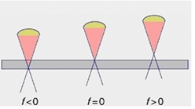

A fiber laser is a laser in which the active gain medium is an optical glass fiber doped with rare-earth elements such as erbium, ytterbium and neodymium, and pumped by diode laser operating at about 950 nm. Ytterbium doped fiber laser has the highest efficiency, therefore high power fiber lasers for material processing applications are Yb-Fiber lasers. The wavelength of Yb-doped fiber laser is 1.07 μm (infra- red). High power fiber lasers are based on double-clad fiber. The gain medium forms the core of the fiber, which is surrounded by two layers of cladding. The relative values of refractive indices of core, n 1 and inner clad, n 2 and outer clad n 3 are n 1 > n 2 >n 3 . The Yb- laser beam propagates in the core guided by the inner cladding through total internal reflections, while the pump beam propagates in the inner cladding layer guided by the outer cladding. This arrangement allows the core to be pumped with a much higher power beam than could otherwise be made to propagate in it, and enables
Fig. (a) Schematic of fiber laser generation, (b) Double-cladded Fiber used for guiding the pump laser
beam and the Fiber laser beam, (c) Detailed construction of a high power Yb-fiber laser pumped by
multiple diode lasers
For cutting operation the high power laser beam is focused with the help of a lens and the focused laser beam is impinged on the metal surface. Along with the laser beam a pressure gas jet is also blow coaxially at a high speed. The gas assists in laser cutting process. Laser melts the material and the high pressure jet ejects out the molten material, thereby creating a clean kerf. Assist gas can be either an inert gas like N2 or Ar or a reactive gas like O2.

https://www.sciencedirect.com/science/article/pii/S1738573317300931
https://www.thefabricator.com/thefabricator/article/lasercutting/back-to-basics-the-subtle-science-of-burr-free-laser-cutting
Laser cutting mechanism mainly can be classified into the following categories:
Fig. 2. Schematic representation of the material removed by laser cutting
A = absorptivity of material surface,
PL = laser power,
w = kerf width,
t = sheet thickness,
v = cutting speed,
ρ = density of metal sheet,
Cp = specific heat,
Tm = melting temperature,
To = room temperature,
Lf = latent heat of fusion.
Severance energy of cutting, defined by (PL/v.t) can be given by:
From the eq(1), it is observed that for a particular material (ρ, Cp, Tm, Lf constant) with a specific thickness, kerf width depends on laser power and scan speed. Apart from these, kerf width depends on various other parameters such as laser absorptivity, laser wavelength, polarization of laser beam, gas jet pressure, type of gas, laser spot size on the surface, location of focal spot w.r.t. surface, stand-off distance (SOD), type of gas nozzle etc.
In the current experiment, effect of gas jet pressure and SOD will be investigated. Hence, effect of laser power, scan speed, gas pressure and SOD on kerf width will be investigated. Effect of the above parameters is also assessed qualitatively on cut quality such as dross and striation.
Gas (in this case oxygen) jet comes coaxially along with laser and is intended to blow the melt. Hence, sufficient gas jet pressure is necessary. SOD controls two parameters namely laser spot diameter on the material surface and gas flow characteristics.
Taper angle = tan-1 [(kerf width at top surface - kerf width at top surface)/ (2* sheet thickness)].

Equipment:
Materials: AISI 304 SS (1.0 mm thick)
Procedure:


Dependence of kerf width and cut quality on process parameters
Laser power & scan speedFrom eq. (1), it can be stated that kerf width will increase with increase in laser power and decrease in scan speed. But, in actual laser cutting process, above certain threshold laser power and below certain threshold scan speed values, kerf width deviates from the above equation and it tends to saturate. The reason is that after certain threshold value, the excess amount of energy supplied by increasing the laser power and/or by decreasing scan speed cannot interact with the material as the material is already melt and blown. Hence the excess heat simply passes through and does not participate in increasing the kerf width.
Gas pressure & SOD
Depending on the SOD, the spot size and the laser energy density on the top of material changes. Hence, the kerf width also changes.
The laminated flow is effective in blowing the melt out. Upto a certain distance from the exit of the nozzle, laminar flow exists. The laminar flow zone decreases with increase in gas pressure. With increase in gas pressure and SOD, the melt blow occurs by transient flow rather than by laminated flow. Hence, the kerf width decreases and dross formation increases.
Striation
Striations are periodic lines on the cut surface. This occurs because of cyclical nature of oxidation reaction between oxygen and iron due to the difference in the oxidation reaction speed and laser scan/cutting speed (v). Here it is assumed that laser only initiates the oxidation reaction, then it continues taking energy from the exothermic reaction and finally stops as a result of the reduction of gas supply as the oxidation front moves away from the gas supply zone. This time is known as time to terminate oxidation reaction (τt). The time required for laser to catch the oxidation front is denoted as τc which depends on laser scan speed. When τc is higher than τt, oxidation front stops at time τt and waits for the laser beam to catch it. Thereafter a new cycle starts and striation continues (Fig. 1). When (τt – τc) is higher than the interaction time (ti = d/v; d:laser beam diameter), true steady state reaction is achieved and the oxidation front in this case cannot escape from the laser beam .The cutting process is now controlled by the laser beam, resulting in steady state cutting making the elimination striation possible (Fig. 2). This speed is the minimum speed required for striation-free cut.
Nevertheless, at high speeds also striations forms but the reason is different from cyclic oxidation as described earlier. This is caused by flow instabilities and flow rippling resulting from lower melt viscosity and higher surface tension.
Fig. 3.5. Schematic drawing of the cyclic reaction when τc is higher than τt [1].
Fig. 2. Schematic drawing of the cyclic reaction when (τt – τc) is higher than ti [1].


- Laser Material Processing by W M Steen and J Mazumder, Fourth edition.
- Sobih, M., Crouse, P.L. and Li, L., 2007. Elimination of striation in laser cutting of mild steel. Journal of Physics D: Applied Physics, 40(22), p.6908.
- Lai, S , Jia, Y. , Han, B. , Wang, J. , Liu, Z. , Ni, X. , Shen, Z. , Lu, J., Lumped Parameter experiments for Single Mode Fiber Laser Cutting of Thin Stainless Steel Plate, IOP Conf. Series: Journal of Physics: Conf. Series 844 (2017) 012062 doi :10.1088/1742-6596/844/1/012062.
- Ghany, K. A., Newishy, M., Cutting of 1.2 mm thick austenitic stainless steel sheet using pulsed and CW Nd:YAG laser, Journal of Materials Processing Technology 168 (2005) 438–447.